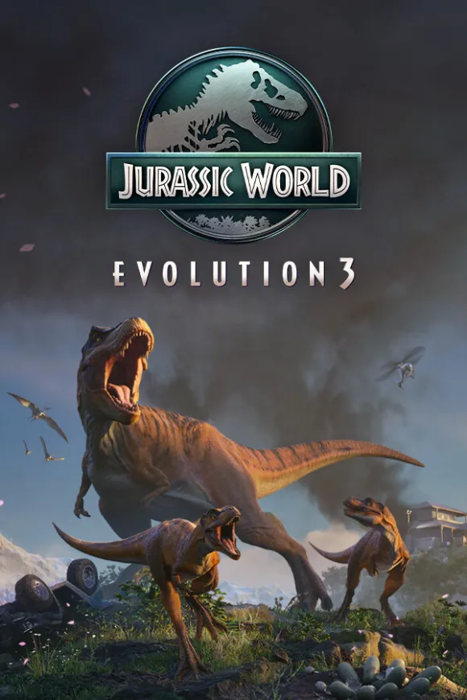

Frontier Developments
Xénero: Simulación | Plataformas: PC, PlayStation, Xbox, Nintendo Switch
Jurassic World Evolution permite ao xogador xestionar e controlar o seu propio parque de dinosaurios. Cría dinosaurios, xestiona recursos e cumpre co cuórum de visitantes mentres mantés o caos baixo control.
O xogo ofrece un equilibrio entre macroxestión de parque e microacións de defensa. Con Subreal Engine, o desenvolvemento de sistemas de IA e comportamento de dinosaurios foi máis fluído, permitindo iteracións rápidas nos mecánicas de combate e estratexia.